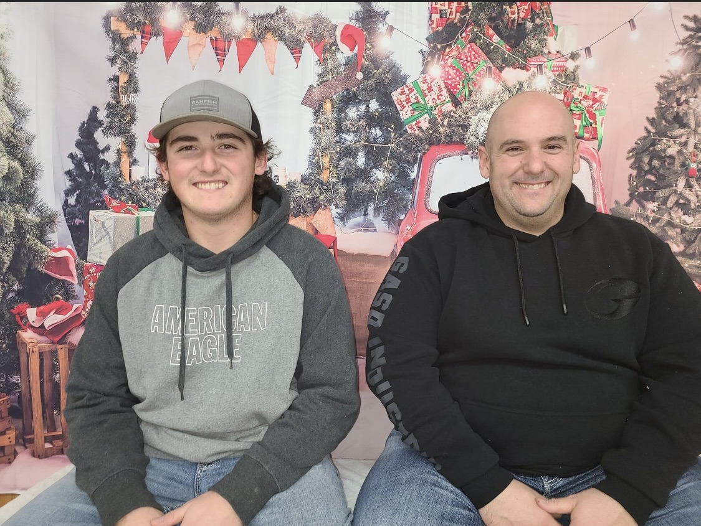

My Resume
Dawson Richard
dawson14.dr@gmail.com 1(902) 315-1181

- Summary
Currently a full-time Eletrical apprentice working in the residential field and part-time learning web
development on my spare time as it is a field I have always been amazed of and growing up have always
enjoyed buildning stuff whether be a motor or small carpentry projects and now taking into the web development
on as much of my spare time I can.
- Education
- 2023-current: Web Development udemy online course
- 2021-2022: Construction Eletrical Holland College
- 2020: Graduate High School Westile Comosite High School
- Work Experiance
- 2019-2020: Carpenter Helper at Elite homes
- (seasonal) 2020: Maritime Atlantics Fish plant
- (seasonal) 2020: Shore Line Flipping
- (seasonal) 2020-2021: Farm Hand at J&J Farms
- (seasonal) 2021: Lobster Fisherman
- May 2022-current: Eletrical Apprentice at Copper Shore Electric
- Awards & Certificates
- 2022: Eletrical Apprentice Block 1 Exam
- 2022: Construction Eletrical Diploma
- 2020: High School Diploma